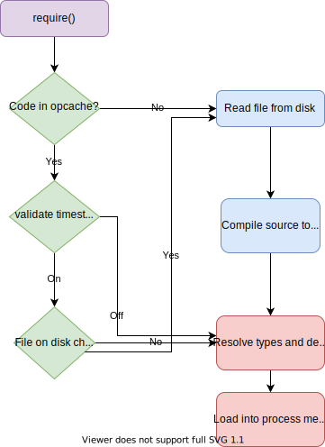
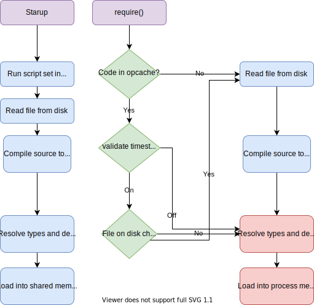

PHP 7.4
The New Hotness
Larry Garfield
@Crell

- Director of DX, Platform.sh
- PHP-FIG Core Committee
implements Huggable
7.4
#1
Anonymous structs are very bad
$order = [
'id' => 345,
'total' => 100.45,
'skus' => [ 123, '5B3', '987'],
'canceled' => false,
'usr' => 8,
];
- Is canceled spelled right?
- Is usr correct or a typo?
- Is user an ID or User object?
- Are skus numeric or strings?
- Can skus be a single value?
- Are there other properties?
- What currency is total in?
Named structs are better
class Order {
public $id;
public $total;
public $cancelled = false;
public $user;
public $skus = [];
}
Typed named structs are best
class Order {
public string $id;
public Money $total;
public bool $cancelled = false;
public User $user;
public array $skus = [];
}
Typed Properties
- Any valid type except callable/void
- Enforced on "set"
- Can be nullable:
private ?User $user; - Obeys strict/weak typing mode
- Cannot change in inheritance
- All you "self-documenting" people, take note
Defaults are logical
class Test {
// Legal default values
public bool $a = true;
public int $b = 42;
public float $c = 42.42;
public string $e = "str";
public array $f = [1, 2, 3];
public iterable $g = [1, 2, 3];
public ?int $h = null;
public ?Test $j = null;
// These have *no* legal default values
// so "uninitialized"
public object $k;
public Test $l;
}
"Uninitialized" behavior
class Product {
public string $size;
}
$p = new Product();
print ($p->size);
// Throws TypeError:
// Typed property Product::$size must not be accessed
// before initialization
So when should I use it?
Pretty much always
#2
$username = $username ? $username : 'Anonymous';
$username = $username ?: 'Anonymous';
But what if $username doesn't exist?
Notice: Undefined variable: username on line 3
Fugly...
$username = isset($username) && !is_null($username) ? $username : 'Anonymous';
NULL coalesce! (PHP 7.0)
$username = $username ?? $user->username() ?? 'Anonymous';
NULL coalesce assign! (PHP 7.4)
$username ??= $user->username() ?? 'Anonymous';
?? and ??= check setness, not truthiness
So when should I use it?
- Default values object/array parameters
- Anywhere it makes the code prettier
#3
How do you combine arrays?
$a1 = [1, 2, 3];
$a2 = [4, 5, 6];
$b = $a1 + $a2; // Maybe?
var_dump($b);
Wrong! Only for all-associative arrays.
array(3) {
[0]=>
int(1)
[1]=>
int(2)
[2]=>
int(3)
}
Fugly
$a1 = [1, 2, 3];
$a2 = [4, 5, 6];
$b = array_merge($a1, $a2); // Eew.
Spread!
$a1 = [1, 2, 3];
$a2 = [4, 5, 6];
$b = [...$a1, ...$a2];
Spread 'em all
function afunc(string $b, User ...$users) : callable
{
$params = [$a, $b, ...$users];
anotherFunc(...$params);
}
- ... in function def: Replaces func_get_args()
- ... in function call: Replaces call_user_func_array()
- ... in array: Replaces array_merge()
... That's amazing!
So when should I use it?
Anytime you would have used array_merge()
#4
Think fast, what number is this?
$num = 10000000000000;
How about this?
$num = 10_000_000_000_000;
Compile identically
Any numeric value
6.674_083e-11; // float
299_792_458; // integer
0xCAFE_F00D; // hexadecimal
0b0101_1111; // binary
0137_041; // octal
So when should I use it?
- Big number constants
- Binary literals
- Hex address literals
#5
Full method
covariance and contravariance
- Covariance
- Preserves ordering of types from more specific to more generic
- Contravariance
- Preserves ordering of types from more general to more specific
"Subclasses work in inheritance now"
PHP < 7.2
Cannot vary method signature at all
class User {}
class Admin extends User {}
class Product {}
class TShirt extends Product {}
class FavoriteFinder {
public function stuff(Admin $user): Product {}
}
class UserFavorite extends FavoriteFinder {
public function stuff(Admin $user): Product {}
}
PHP 7.2
Can add return types and remove param types
class User {}
class Admin extends User {}
class Product {}
class TShirt extends Product {}
class FavoriteFinder {
public function stuff(Admin $user) {}
}
class UserFavorite extends FavoriteFinder {
public function stuff($user): TShirt {}
}
PHP 7.4
Super-types for params, subtypes for returns
class User {}
class Admin extends User {}
class Product {}
class TShirt extends Product {}
class FavoriteFinder {
public function stuff(Admin $user): Product {}
}
class UserFavorite extends FavoriteFinder {
public function stuff(User $user): TShirt {}
}
return self now works!
interface AList {
public function add($item): self;
}
class SpecialList implements AList {
public function add($item): self {}
}
PHP < 7.4
Fatal error: Declaration of SpecialList::add($item): SpecialList must be compatible with AList::add($item): AList
(But wait, return static is coming in PHP 8...)
So when should I use it?
Any time you want (especially value objects)!
#6
__sleep/__wakeup (The before times)
class User {
protected int $id;
protected string $name;
protected DateTime $lastLogin;
// ...
public function __sleep() {
return ['id', 'name'];
}
public function __wakeup() {
$this->lastLogin = UserSystem::getLastLogin($this->id);
}
}
$s = serialize(new User());
print_r($s);
// O:4:"User":2:{s:5:"*id";i:42;s:7:"*name";s:5:"Larry";}
__sleep/__wakeup
Done well
- Inheritance works properly
- Object references retained
- Let's the serializer engine do the hard work
Problems
- Can only serialize existing properties
- Cannot control deserialization
Serializable (PHP 5.1)
class User implements Serializable {
protected int $id;
protected string $name;
protected DateTime $lastLogin;
public function serialize() : string {
return serialize(['id' => $this->id, 'name' => $this->name]);
}
public function unserialize($serialized) : void {
$data = unserialize($serialized);
$this->id = $data['id'];
$this->name = $data['name'];
$this->lastLogin = UserSystem::getLastLogin($this->id);
}
}
$s = serialize(new User());
print_r($s);
// C:4:"User":43:{a:2:{s:2:"id";i:42;s:4:"name";s:5:"Larry";}}
Done well
- More flexibility in representation
Problems
- Breaks on circular references
- Breaks on inheritance (sometimes)
- Opaque serialized value
- No guarantee serialized format is
serialize()-ish - Breaks up the serializer, no optimizations
__serialize/__unserialize (PHP 7.4)
class User {
protected int $id;
protected string $name;
protected DateTime $lastLogin;
// ...
public function __serialize() : array {
return ['id' => $this->id, 'name' => $this->name];
}
public function unserialize(array $data) : void {
$this->id = $data['id'];
$this->name = $data['name'];
$this->lastLogin = UserSystem::getLastLogin($this->id);
}
}
$s = serialize(new User());
print_r($s);
// O:4:"User":2:{s:2:"id";i:42;s:4:"name";s:5:"Larry";}
__serialize/__unserialize
Done well
- Inheritance works
- Object references retained
- Full flexibility for what is serialized
- Let's the serializer engine do the hard work
- Backward compatible
- Identical format to
__sleep() - Essentially a built-in "normalizer" operation
Problems
- None yet? :-)
Presidence
__serialize() > Serializable > __sleep() > default
O: __unserialize() > __wakeup() > default
C: Serializable > __wakeup() > default
So when should I use it?
- Any time you want to serialize an object
- When you need a cheap normalized form
#7
This is too verbose
$users = [new User(1), new User(2), new User(3), /* ... */];
$field = 'first';
usort($users, function (User $u1, User $u2) use ($field) {
return $u1->get($field) <=> $u2->get($field);
});
$names = array_map(function(User $user) use ($field) {
return $user->get($field);
}, $users);
Now more compact
$users = [new User(1), new User(2), new User(3), /* ... */];
$field = 'first';
usort($users, fn($u1, $u2) => $u1->get($field) <=> $u2->get($field));
$names = array_map(fn(User $user) => $user->get($field), $users);
Short-lambda / Arrow function
$func = fn() => *expression*;
$func = fn($a) => *expression*;
$func = fn(string $a): string => *expression*;
- Supports types or not
- Single expression only
- Auto-capture by value
- Is itself a value literal
For Functional Programming
Trivial partial application
function volume(float $x, float $y, float $z): float {
return $x * $y * $z;
}
$x = 5;
$volumeWithX = function(float $y, float $z) use ($x): float {
return volume($x, $y, $z);
}
$volumeWithX = fn(float $y, float $z): float => volume($x, $y, $z);
$volumeWithXY = fn(float $z) : float => $volumeWithX(4, $z);
$volumeForLength = fn(float $y): float => volume(5, $y, 8);
The class equivalent
class YVolumizer {
private float $x;
private float $z;
public function __construct(float $x, float $z) {
$this->x = $x;
$this->z = $z;
}
public function __invoke(float $y): float {
return $this->x * $y * $this->z;
}
}
$volumizerForLength = new YVolumizer(5, 8);
print $volumizerForLength(4);
$volumeForLength = fn(float $y): float => volume(5, $y, 8);
print $volumeForLength(4);
Make any function single-parameter
function compose(callable ...$fns): callable {
return fn($x)
=> array_reduce($fns, fn($collect, $fn)
=> $fn($collect), $x);
}
$holiday = "Lincoln's Birthday";
$findPromotionsFor = compose(
fn($x) => getShoppingList($x, 'wishlist'),
fn($x) => mostExpensiveItem($x, ['exclude' => 'onSale']),
fn($x) => getPromotions($x, $holiday),
);
$findPromotionsFor($someUser);
So when should I use it?
- Most map/filter/usort calls
- Call function parameters out of order
- "Thinking in functions"
#8
Q: What is the slowest, avoidable part of a large app?
A: Autoloading
How PHP Opcache works
How PHP 7.4 Opcache works
php.ini
opcache.preload = preload-script.php
preload-script.php
$directory = new RecursiveDirectoryIterator(__DIR__ . '/vendor');
$iterator = new RecursiveIteratorIterator($directory);
$regex = new RegexIterator($iterator, '/^.+\.php$/i',
RecursiveRegexIterator::GET_MATCH);
foreach ($regex as $key => $file) {
// This is the important part!
opcache_compile_file($file[0]);
}
So when should I use it?
- Let benchmarks tell you
- Anything not easily autoloaded (functions)
- I'll probably use it for most code
#9
Foreign Function Interface
- Expose C ABI code to PHP
- Works with any compiled C ABI language (mainly C and Rust)
- Kind of a clunky API
- Many security considerations
points.h
struct point {
int x;
int y;
};
double distance(struct point first, struct point second);
points.c
#include "points.h"
#include <math.h>
double distance(struct point first, struct point second) {
double a_squared = pow((second.x - first.x), 2);
double b_squared = pow((second.y - first.y), 2);
return sqrt(a_squared + b_squared);
}
classes.php
class Point {
public int $x;
public int $y;
public function __construct(int $x, int $y) {
$this->x = $x;
$this->y = $y;
}
}
inline.php
require_once 'classes.php';
$ffi = FFI::cdef(file_get_contents('points.h'), 'points.so');
$p1 = new Point(3, 4);
$p2 = new Point(7, 9);
$cp1 = $ffi->new('struct point');
$cp2 = $ffi->new('struct point');
$cp1->x = $p1->x;
$cp1->y = $p1->y;
$cp2->x = $p2->x;
$cp2->y = $p2->y;
$d = $ffi->distance($cp1, $cp2);
print "Distance is $d\n";
$ php inline.php
Distance is 6.4031242374328
:-)
But this is super slow
:-(
FFI performance
- C code is way faster than PHP
- Initializing the library on each request is very slow
- Calling across the PHP/C boundary is very slow
Running arbitrary C code is stupidly insecure!
Preloading FFI
- FFI only works from CLI or in preload code
ffi.enable=true(don't do this in prod!)- Default is
preload - Preload requires Opcache
- Opcache not enabled on CLI by default
points.h
#define FFI_SCOPE "POINTS"
#define FFI_LIB "./points.so"
struct point {
int x;
int y;
};
double distance(struct point first, struct point second);
preloader.php
FFI::load(__DIR__ . "/points.h");
opcache_compile_file(__DIR__ . "/classes.php");
preload.php
$ffi = \FFI::scope("POINTS");
$p1 = new Point(3, 4);
$p2 = new Point(7, 9);
$cp1 = $ffi->new('struct point');
$cp2 = $ffi->new('struct point');
$cp1->x = $p1->x;
$cp1->y = $p1->y;
$cp2->x = $p2->x;
$cp2->y = $p2->y;
$d = $ffi->distance($cp1, $cp2);
print "Distance is $d\n";
$ php -d opcache.preload="preloader.php" \
-d opcache.enable_cli=true \
preload.php
Distance is 6.4031242374328
Abstract the API
classes.php
class Point {
public int $x;
public int $y;
public function __construct(int $x, int $y) {
$this->x = $x;
$this->y = $y;
}
public function toStruct($ffi) {
$cp = $ffi->new('struct point');
$cp->x = $this->x;
$cp->y = $this->y;
return $cp;
}
}
Abstract the API
classes.php
class PointApi {
private static $ffi = null;
public function __construct() {
static::$ffi ??= \FFI::scope("POINTS");
}
public function distance(Point $p1, Point $p2): float {
$cp1 = $p1->toStruct(static::$ffi);
$cp2 = $p2->toStruct(static::$ffi);
return static::$ffi->distance($cp1, $cp2);
}
}
preload.php
$p1 = new Point(3, 4);
$p2 = new Point(7, 9);
$api = new PointApi();
$d = $api->distance($p1, $p2);
print "Distance is $d\n";
It works with Rust-based .so files, too!
(Though you'll need a manual header file)
Examples and resources
- PHPfun with FFI series
- These examples in C and Rust
- FFI with existing libs from Gabriel Couto
So when should I use it?
- Not for everyday use
- When you would have needed an extension
- Existing large C libraries you want to use (Machine learning?)
- Very complex self-contained algorithms (Use Rust)
#10
Beware these deprecations/changes
__toString can now throw Exceptions
{} for strings and arrays is deprecated
Again...
$array = [1, 2];
echo $array[1]; // prints 2
echo $array{1}; // also prints 2 - DEPRECATED
$string = "foo";
echo $string[0]; // prints "f"
echo $string{0}; // also prints "f" - DEPRECATED
Left-associative ternaries deprecated
return $a == 1 ? 'one'
: $a == 2 ? 'two'
: $a == 3 ? 'three'
: $a == 4 ? 'four'
: 'other';
Does that check $a == 1 first, or last?
In PHP 7.3
return ((($a == 1 ? 'one'
: $a == 2) ? 'two'
: $a == 3) ? 'three'
: $a == 4) ? 'four'
: 'other';
$a == 1 prints four
In PHP 7.4
Parentheses are required when nested, deprecation warning otherwise
In PHP 8.0
Parentheses are required when nested, compile error otherwise
In all versions
What are you doing nesting ternaries like that???
$a ?: $b ?: $c is unchanged
Concatenation precedence
// How is this interpreted?
echo "sum: " . $a + $b;
// PHP 7.3
echo ("sum: " . $a) + $b;
// PHP 7.4 (what you probably always meant)
echo "sum :" . ($a + $b);
array_key_exists() with objects is deprecated
implode($pieces, $glue) is deprecated
money_format() is deprecated; use NumberFormatter::formatCurrency()
allow_url_include is deprecated
$closure->bindTo(null) is deprecated
array access on non-container throws E_WARNING
<aside>
</aside>
So when should I use it?
Right now!
PHP Versions lists 17 compatible hosts
(Yep, including Platform.sh)
Larry Garfield
@Crell
Director of Developer Experience Platform.sh
Idea to Cloud Hosting
Stalk us at @PlatformSH